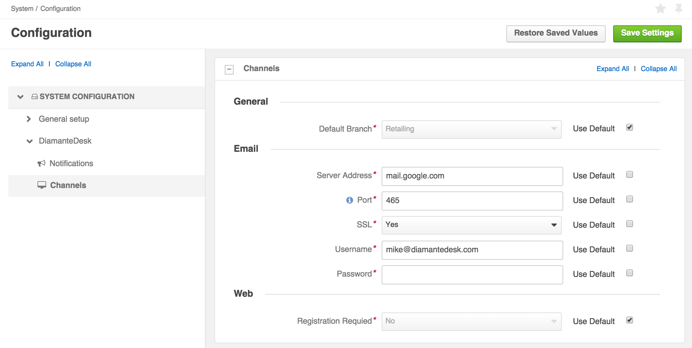
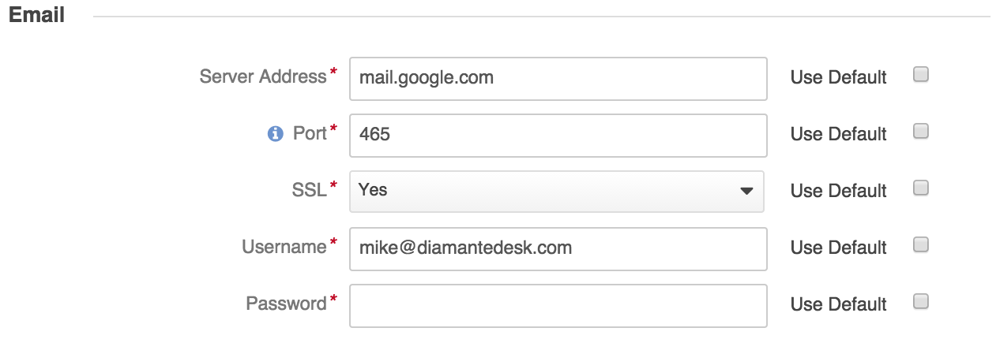

Email Processing
DiamanteDesk supports 4 possible options of contacting a help desk team in order to create a new ticket and make a request or report an issue. Any user can do it through the Portal or Embedded Form, over the phone call or by sending an email to the support email account.
All the emails that get to the support email account (or email alias) are retrieved by the DiamanteDesk system in order to create a separate ticket out of each received letter. Tickets are created either at a single default branch or in different branches depending on the specific support address from the email alias.
Configuration
Most of the medium and large size companies use support email alias addresses (such as support@companyname.com, info@companyname.com, hq@companyname.com, sales@companyname.com) but in fact, all the emails that are sent to these addresses are stored at a single support account. DiamanteDesk allows converting all these emails into the support tickets automatically and these tickets can be distributed to different branches depending on the email address they were sent to. Alternatively, all the created tickets are stored at a single branch, defined as a default one at System > Configuration.
To make sure that all customer requests sent to the defined email account are converted into tickets by the system, the email processing feature shall be configured properly.
How to set up a support account
Go to System > Configuration.
On the System Configuration pane select the DiamanteDesk menu and Channels tab.
The Channels screen opens.

Configure the Email section to set up an email account. All the fields in the Email section are required fields and each of them has specific default settings. To use the default settings, select the Use Default check box in the corresponding field. To edit the configurations, clear the Use Default check box in the corresponding field and specify the necessary value.

| Field | Description |
|---|---|
| Server Address | Specify the server address of the support account (for example, imap.google.com) |
| Port | Provide the port number. Hint: It is typically on port 143. But IMAP over SSL is usually on port 993. |
| SSL | Specify whether you want to use a secure connection (SSL) when retrieving your mail. Select Yes or No option. |
| Username | Provide the email account (for example, support@diamantedesk.com). |
| Password | Provide the password to access email account. |
How to distribute tickets to different branches
Tickets created from emails can be distributed to different branches depending on the email account they were sent to. For example, tickets sent to info@companyname.com can be added to the “Info” branch, same as tickets sent to support@companyname.com can be added to the “Support” branch. Branch logic helps to organize tickets in a way to keep track of the tickets according to a certain category and quickly find them in a system. This option can be configured directly at the Email Configuration section of the Branch configuration screen when the branch is created or open the required branch and click Edit.
Provide the support email address relevant to this branch in the Support Address field (for example, it is a good idea to add all the tickets sent to sales@companyname.com to the “Sales” branch) and the customer domain name (for example, eltrino.com) to add all the emails sent from the email address with such customer domain to a specific branch.
How to add tickets to a single branch
To configure the email processing in a way when all the tickets created from emails are added to a single default branch, go to System > Configuration. On the System Configuration pane select the DiamanteDesk menu and Channels tab. The Channels screen opens.
In the General section select a default branch for email processing. All the newly created tickets will automatically get to the specified branch. To set one of the existing default branches as default one, make sure that the Use Default check box is clear, click the down arrow in the Default Branch field and select the required branch from the drop-down list. If the Use Default check box is selected, the branch that was created in the system first becomes a default one.
Note: A branch configured as a default one cannot be deleted.
After all the necessary information has been provided, click Save Settings at the right top part of the screen.
Run Email Processing
You can also run and configure email processing from the console. Two commands are available:
- using IMAP protocol for email retrieval from a remote email server.
php app/console oro:cron:diamante:emailprocessing:generalThis command may be configured through a crontab, allowing to send polls periodically on a given schedule it’s perfect for retrieving emails from the remote server.
- or using the email piping method:
php app/console diamante:emailprocessing:pipe < /path/to/emails/streamThis command is only applicable when DiamanteDesk and email server are installed on the same server machine. It includes piping method which has a remarkable advantage over a IMAP, as, when using piping, all the emails get to the system and are converted into tickets or comments immediately, unlike when using IMAP which sends polls to the remote server within scheduled time (at least 1 minute). This advantage allows to quicky react on customer requests or solve any issues on a real-time basis.